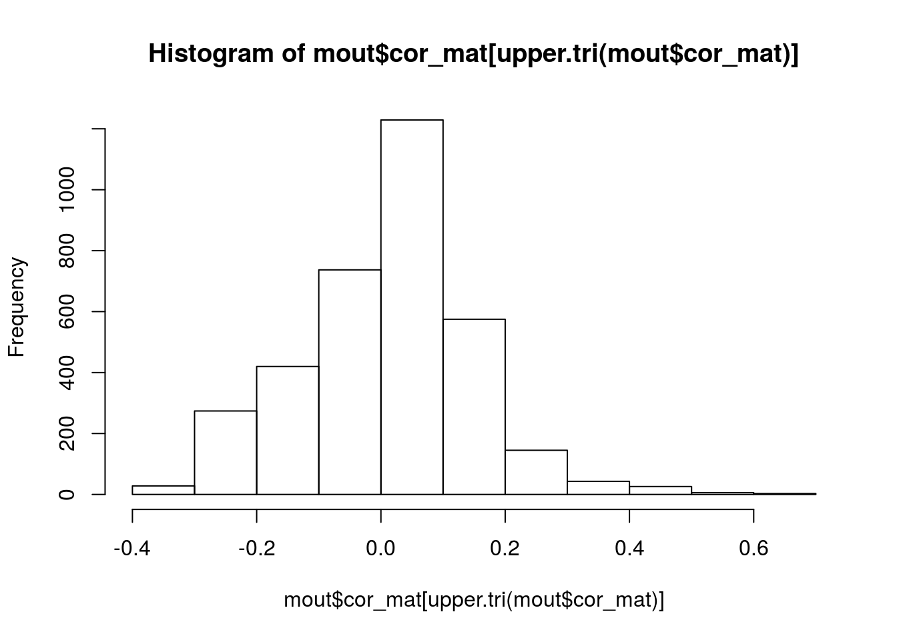
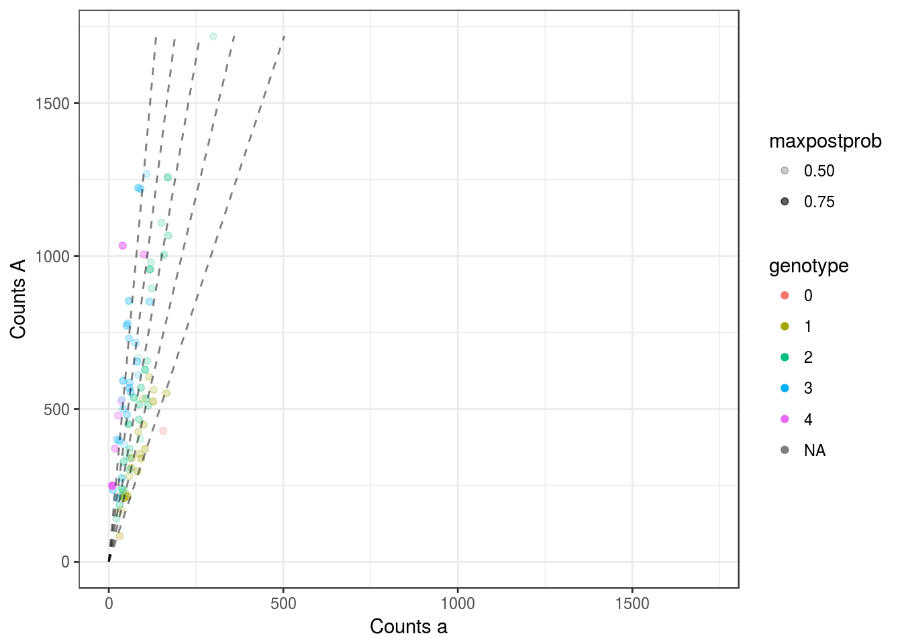
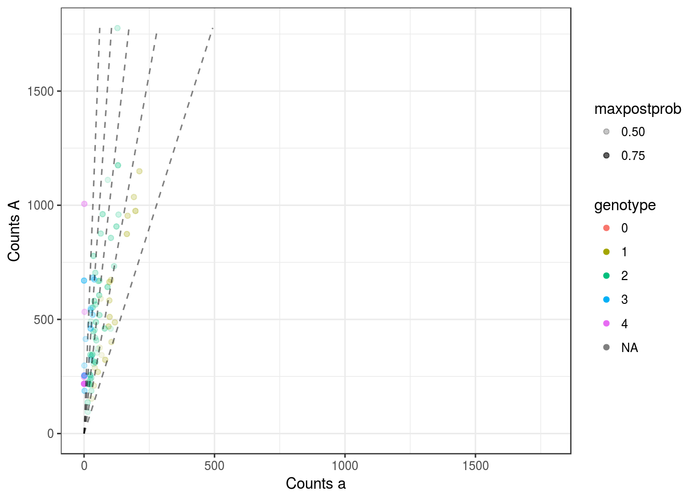
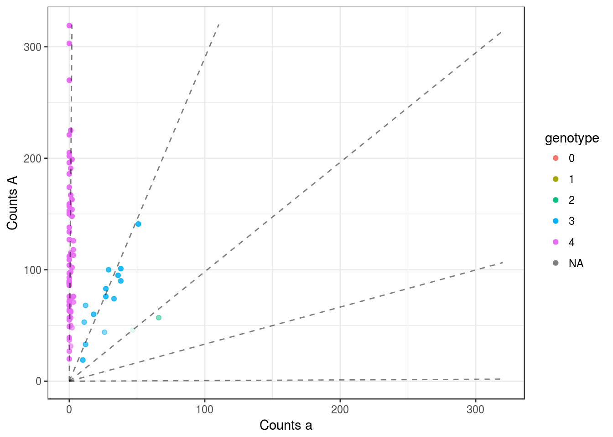
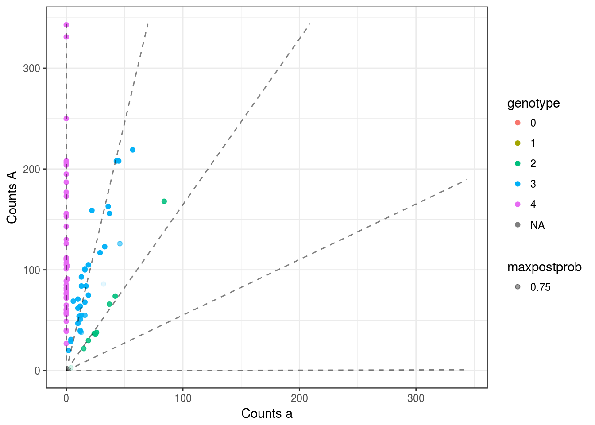
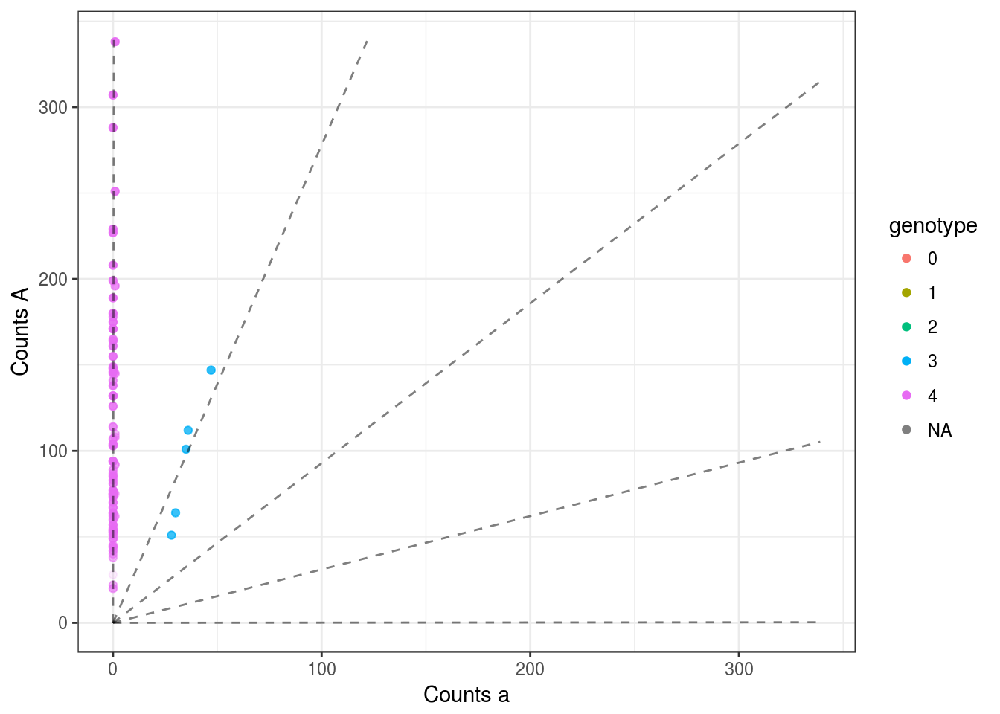
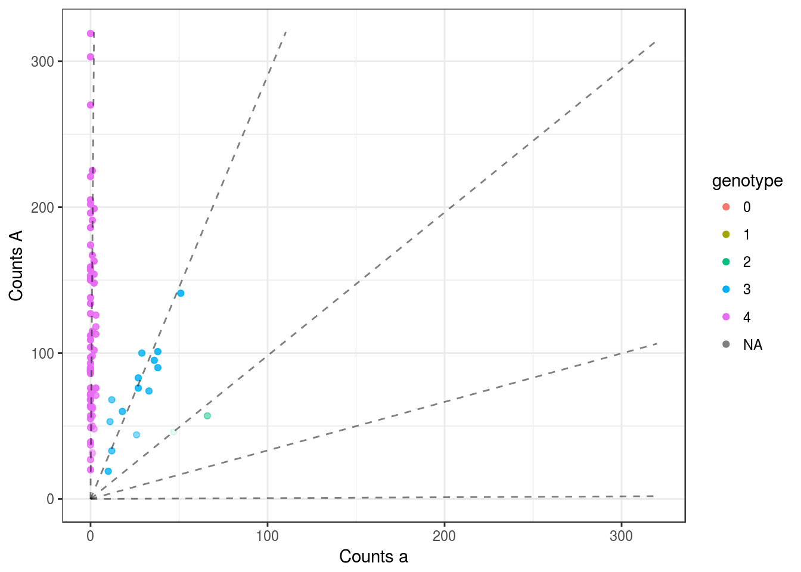
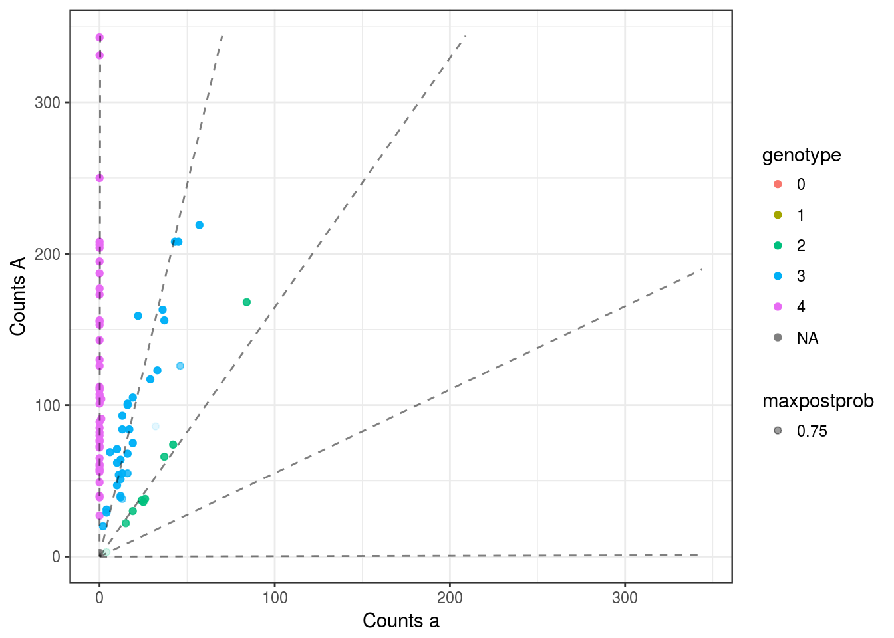
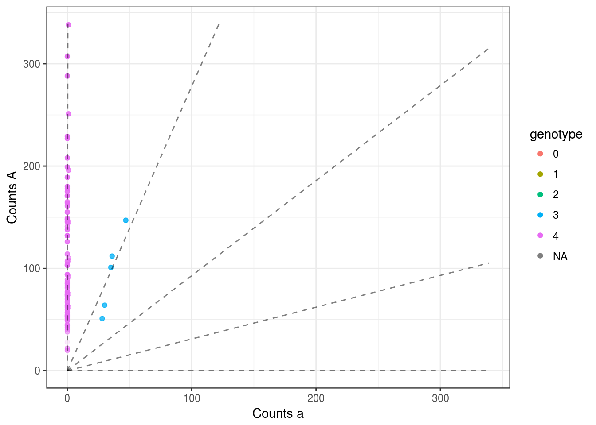

uitdewilligen
David Gerard
December 20, 2017
Abstract
I try out mupdog on the data from
Uitdewilligen, Jan GAML, et al. “A next-generation sequencing method for genotyping-by-sequencing of highly heterozygous autotetraploid potato.” PLoS One 8.5 (2013): e62355.
Which may be obtained here:
Extract Data from VCF
library(vcfR)
uit <- read.vcfR(file = "~/Data/uitdewilligen_raw_data/NewPlusOldCalls.headed.vcf")
## DP = read-depth
## AA = alternative allele
## GT = genotype
## GQ = genotype quality
## GL = log-10 scaled likelihood of genotype
## RA = reference allele
## DP = read-depth
refmat <- extract.gt(uit, element = "RA")
class(refmat) <- "numeric"
altmat <- extract.gt(uit, element = "AA")
class(altmat) <- "numeric"
sizemat <- extract.gt(uit, element = "DP")
class(sizemat) <- "numeric"
refmat[1000,10]
altmat[1000,10]
sizemat[1000, 10]
depth_vec <- rowMeans(sizemat)
order_vec <- order(depth_vec, decreasing = TRUE)[1:sum(depth_vec >= 100, na.rm = TRUE)]
summary(depth_vec[order_vec])
saveRDS(file = "../data/uitdewilligen_snps.RDS", list(refmat = t(refmat[order_vec, ]), sizemat = t(sizemat[order_vec, ]), ploidy = 4))Some EDA
library(mupdog)
library(updog)
library(tidyverse)## -- Attaching packages ------- tidyverse 1.2.1 --## v ggplot2 2.2.1 v purrr 0.2.4
## v tibble 1.3.4 v dplyr 0.7.4
## v tidyr 0.7.2 v stringr 1.2.0
## v readr 1.1.1 v forcats 0.2.0## -- Conflicts ---------- tidyverse_conflicts() --
## x dplyr::filter() masks stats::filter()
## x dplyr::lag() masks stats::lag()inlist <- readRDS("../data/uitdewilligen_snps.RDS")
refmat <- inlist$refmat
sizemat <- inlist$sizemat
ploidy <- inlist$ploidyset.seed(50)
for (index in sample(1:nrow(refmat), 20)) {
pl <- plot_geno(ocounts = refmat[, index], osize = sizemat[, index], ploidy = ploidy)
print(pl)
}mout <- mupdog(refmat = refmat, sizemat = sizemat, ploidy = ploidy, verbose = TRUE, num_clust = 7,
control = list(obj_tol = 10^-5, itermax = 200))
saveRDS(mout, "../output/uit_fit/fit_uit1.RDS")mout <- readRDS("../output/uit_fit/fit_uit1.RDS")In non-sib populations, it seems that overdispersion on the genotypes is more important:
qplot(mout$inbreeding, bins = 30) +
theme_bw()Our prior for the sequencing error rate is a little off. Seems that it should have a mean of around -6 and a variance of around 0.5 (using mad to estimate this due to bad SNP’s).
logitseq <- log(mout$seq / (1 - mout$seq))
qplot(logitseq, bins = 30) +
theme_bw()mad(logitseq) ^ 2## [1] 0.5232median(logitseq)## [1] -6.142The log-bias seems to have some heavy tails, but it is generally between -2 and 2, as our prior states. There seems to be a slight negative bias (in direction of reference), which makes sense.
logbias <- log(mout$bias)
qplot(logbias, bins = 30) +
theme_bw()I would remove all SNP’s with an overdispersion parameter greater than 0.05.
qplot(mout$od, bins = 30) +
theme_bw()I don’t know why there is some negative correlation here.
hist(mout$cor_mat[upper.tri(mout$cor_mat)])
There seems to be two distinct groups, which is super cool! Maybe there was a cluster of relatives here.
library(corrplot)## corrplot 0.84 loadedcorrplot(corr = mout$cor_mat, method = "square", order = "hclust")The genes with the largest read depth look horrible
for (index in 1:5) {
pl <- plot(mout, index)
print(pl)
}
My guess is that these aren’t real genes, but a combination of multiple genes that look the same. E.g. this could be due to copy number variation.
The genes with moderate to small read depth look really good
for (index in 20001:20005) {
pl <- plot(mout, index)
print(pl)
} 

This R Markdown site was created with workflowr